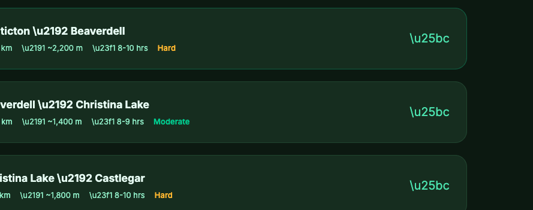

<!DOCTYPE html>
<html lang="en">
<head>
  <meta charset="UTF-8" />
  <meta name="viewport" content="width=device-width, initial-scale=1.0" />
  <meta http-equiv="Cache-Control" content="no-cache, no-store, must-revalidate" />
  <meta http-equiv="Pragma" content="no-cache" />
  <meta http-equiv="Expires" content="0" />
  <title>Penticton → Kimberley — BC Epic 1000 Bikepacking Plan</title>
  <script src="https://unpkg.com/react@18/umd/react.production.min.js" crossorigin></script>
  <script src="https://unpkg.com/react-dom@18/umd/react-dom.production.min.js" crossorigin></script>
  <script src="https://unpkg.com/@babel/standalone/babel.min.js"></script>
  <script>
    // All symbols and data defined in regular script to avoid Babel UTF-8 issues
    window.SYM = {
      ARROW: String.fromCodePoint(0x2192),
      UP: String.fromCodePoint(0x2191),
      TIMER: String.fromCodePoint(0x23F1),
      DOWN: String.fromCodePoint(0x25BC),
      BULL: String.fromCodePoint(0x2022),
      DASH: String.fromCodePoint(0x2014),
      DARR: String.fromCodePoint(0x2193),
      TENT: String.fromCodePoint(0x26FA),
      CART: String.fromCodePoint(0x1F6D2),
      WARN: String.fromCodePoint(0x26A0, 0xFE0F),
      BACK: String.fromCodePoint(0x21A9, 0xFE0F),
      PIN: String.fromCodePoint(0x1F4CD),
      DROP: String.fromCodePoint(0x1F4A7),
      SHIP: String.fromCodePoint(0x26F4, 0xFE0F),
      DEG: String.fromCodePoint(0x00B0),
      COFFEE: String.fromCodePoint(0x2615),
      WILD: String.fromCodePoint(0x1F332),
    };
  </script>
  <link href="https://fonts.googleapis.com/css2?family=Inter:wght@300;400;500;600;700;800;900&family=Playfair+Display:wght@700;800;900&display=swap" rel="stylesheet" />
  <style>
    :root {
      --bg-primary: #0a1a0f;
      --bg-secondary: #112718;
      --bg-card: #1a3322;
      --bg-card-hover: #1f3d28;
      --text-primary: #ecfdf5;
      --text-secondary: #a7f3d0;
      --text-muted: #6ee7b7;
      --accent: #34d399;
      --accent-glow: rgba(52, 211, 153, 0.15);
      --accent-secondary: #fbbf24;
      --gradient-start: #10b981;
      --gradient-end: #34d399;
      --border: rgba(134, 239, 172, 0.12);
      --danger: #f87171;
      --warning: #fbbf24;
      --success: #34d399;
      --info: #60a5fa;
      --hero-gradient: linear-gradient(135deg, #0a1a0f 0%, #112718 40%, #0a1a10 100%);
      --card-shadow: 0 4px 24px rgba(0,0,0,0.35);
    }

    * { margin: 0; padding: 0; box-sizing: border-box; }
    html { scroll-behavior: smooth; }
    body {
      font-family: 'Inter', -apple-system, sans-serif;
      background: var(--bg-primary);
      color: var(--text-primary);
      line-height: 1.6;
      overflow-x: hidden;
    }
    .container { max-width: 960px; margin: 0 auto; padding: 0 24px; }

    /* ========== HERO ========== */
    .hero {
      min-height: 100vh;
      display: flex;
      flex-direction: column;
      justify-content: center;
      align-items: center;
      text-align: center;
      background: var(--hero-gradient);
      position: relative;
      overflow: hidden;
      padding: 40px 24px;
    }
    .hero::before {
      content: '';
      position: absolute;
      top: -50%;
      left: -50%;
      width: 200%;
      height: 200%;
      background: radial-gradient(ellipse at 30% 50%, rgba(52, 211, 153, 0.06) 0%, transparent 60%),
                  radial-gradient(ellipse at 70% 30%, rgba(251, 191, 36, 0.04) 0%, transparent 50%);
      animation: float 20s ease-in-out infinite;
    }
    @keyframes float {
      0%, 100% { transform: translate(0, 0) rotate(0deg); }
      50% { transform: translate(-2%, 2%) rotate(1deg); }
    }
    .hero-content { position: relative; z-index: 1; }
    .hero-badge {
      display: inline-block;
      padding: 6px 16px;
      border: 1px solid var(--border);
      border-radius: 20px;
      font-size: 13px;
      font-weight: 500;
      color: var(--text-muted);
      letter-spacing: 2px;
      text-transform: uppercase;
      margin-bottom: 24px;
    }
    .hero h1 {
      font-family: 'Playfair Display', serif;
      font-size: clamp(2.5rem, 6vw, 4.5rem);
      font-weight: 900;
      line-height: 1.1;
      margin-bottom: 16px;
      background: linear-gradient(135deg, var(--text-primary), var(--accent));
      -webkit-background-clip: text;
      -webkit-text-fill-color: transparent;
    }
    .hero-subtitle {
      font-size: clamp(1rem, 2.5vw, 1.3rem);
      color: var(--text-secondary);
      margin-bottom: 40px;
      font-weight: 300;
    }
    .hero-stats {
      display: grid;
      grid-template-columns: repeat(auto-fit, minmax(120px, 1fr));
      gap: 20px;
      max-width: 700px;
      width: 100%;
    }
    .hero-stat {
      text-align: center;
      padding: 20px 12px;
      background: rgba(255,255,255,0.03);
      border-radius: 16px;
      border: 1px solid var(--border);
    }
    .hero-stat-value {
      font-size: 2rem;
      font-weight: 800;
      color: var(--accent);
      line-height: 1;
    }
    .hero-stat-label {
      font-size: 11px;
      text-transform: uppercase;
      letter-spacing: 1.5px;
      color: var(--text-muted);
      margin-top: 6px;
    }
    .scroll-indicator {
      position: absolute;
      bottom: 30px;
      left: 50%;
      transform: translateX(-50%);
      font-size: 12px;
      color: var(--text-muted);
      letter-spacing: 2px;
      text-transform: uppercase;
      animation: bounce 2s ease infinite;
    }
    @keyframes bounce {
      0%, 100% { transform: translateX(-50%) translateY(0); }
      50% { transform: translateX(-50%) translateY(8px); }
    }

    /* ========== SECTIONS ========== */
    section { padding: 80px 0; }
    .section-label {
      font-size: 11px;
      text-transform: uppercase;
      letter-spacing: 3px;
      color: var(--accent);
      margin-bottom: 8px;
    }
    .section-title {
      font-family: 'Playfair Display', serif;
      font-size: clamp(1.8rem, 4vw, 2.5rem);
      font-weight: 800;
      margin-bottom: 40px;
    }

    /* ========== ELEVATION PROFILE ========== */
    .elevation-card {
      background: var(--bg-card);
      border-radius: 20px;
      padding: 32px;
      border: 1px solid var(--border);
      margin-bottom: 40px;
    }
    .elevation-card h3 {
      font-size: 14px;
      text-transform: uppercase;
      letter-spacing: 2px;
      color: var(--text-muted);
      margin-bottom: 20px;
    }
    .elevation-svg { width: 100%; height: auto; }
    .elevation-labels {
      display: flex;
      justify-content: space-between;
      margin-top: 12px;
      font-size: 11px;
      color: var(--text-muted);
    }

    /* ========== DAY CARDS ========== */
    .day-card {
      background: var(--bg-card);
      border-radius: 20px;
      border: 1px solid var(--border);
      margin-bottom: 20px;
      overflow: hidden;
      transition: all 0.3s ease;
      cursor: pointer;
    }
    .day-card:hover { border-color: rgba(52, 211, 153, 0.3); }
    .day-card.expanded { border-color: var(--accent); }
    .day-header {
      padding: 24px 28px;
      display: flex;
      align-items: center;
      gap: 20px;
    }
    .day-number {
      width: 52px;
      height: 52px;
      border-radius: 14px;
      background: linear-gradient(135deg, var(--gradient-start), var(--gradient-end));
      display: flex;
      align-items: center;
      justify-content: center;
      font-weight: 800;
      font-size: 20px;
      color: #fff;
      flex-shrink: 0;
    }
    .day-number.crux {
      background: linear-gradient(135deg, #f59e0b, #ef4444);
    }
    .day-info { flex: 1; min-width: 0; }
    .day-route {
      font-weight: 700;
      font-size: 1.1rem;
      margin-bottom: 4px;
    }
    .day-meta {
      display: flex;
      gap: 16px;
      flex-wrap: wrap;
      font-size: 13px;
      color: var(--text-secondary);
    }
    .day-meta span { white-space: nowrap; }
    .day-expand-icon {
      font-size: 20px;
      color: var(--text-muted);
      transition: transform 0.3s;
      flex-shrink: 0;
    }
    .day-card.expanded .day-expand-icon { transform: rotate(180deg); }
    .day-details {
      max-height: 0;
      overflow: hidden;
      transition: max-height 0.4s ease;
    }
    .day-card.expanded .day-details { max-height: 2000px; }
    .day-details-inner { padding: 0 28px 28px; }

    .terrain-bar {
      height: 8px;
      border-radius: 4px;
      display: flex;
      overflow: hidden;
      margin: 16px 0 8px;
    }
    .terrain-bar div { height: 100%; }
    .terrain-legend {
      display: flex;
      gap: 16px;
      font-size: 11px;
      color: var(--text-muted);
      flex-wrap: wrap;
    }
    .terrain-legend span::before {
      content: '';
      display: inline-block;
      width: 10px;
      height: 10px;
      border-radius: 3px;
      margin-right: 4px;
      vertical-align: middle;
    }
    .terrain-gravel::before { background: #34d399 !important; }
    .terrain-paved::before { background: #60a5fa !important; }
    .terrain-singletrack::before { background: #f59e0b !important; }
    .terrain-fsr::before { background: #a78bfa !important; }

    .waypoint-list { margin-top: 20px; }
    .waypoint {
      display: flex;
      gap: 12px;
      padding: 10px 0;
      border-bottom: 1px solid var(--border);
      font-size: 14px;
    }
    .waypoint:last-child { border-bottom: none; }
    .wp-icon {
      width: 28px;
      height: 28px;
      border-radius: 8px;
      display: flex;
      align-items: center;
      justify-content: center;
      font-size: 14px;
      flex-shrink: 0;
    }
    .wp-camp { background: rgba(52, 211, 153, 0.2); }
    .wp-resupply { background: rgba(96, 165, 250, 0.2); }
    .wp-hazard { background: rgba(248, 113, 113, 0.2); }
    .wp-shortcut { background: rgba(251, 191, 36, 0.2); }
    .wp-poi { background: rgba(255, 255, 255, 0.08); }
    .wp-water { background: rgba(56, 189, 248, 0.2); }
    .wp-ferry { background: rgba(167, 139, 250, 0.2); }
    .wp-cafe { background: rgba(217, 119, 87, 0.22); }
    .wp-wild { background: rgba(132, 204, 22, 0.2); }
    .wp-name { font-weight: 600; color: var(--text-primary); }
    .wp-desc { color: var(--text-secondary); font-size: 13px; }

    .day-tip {
      margin-top: 20px;
      padding: 16px;
      border-radius: 12px;
      font-size: 13px;
      line-height: 1.5;
    }
    .day-tip.tip-warning {
      background: rgba(251, 191, 36, 0.1);
      border: 1px solid rgba(251, 191, 36, 0.2);
      color: var(--warning);
    }
    .day-tip.tip-danger {
      background: rgba(248, 113, 113, 0.1);
      border: 1px solid rgba(248, 113, 113, 0.2);
      color: var(--danger);
    }
    .day-tip.tip-info {
      background: rgba(96, 165, 250, 0.1);
      border: 1px solid rgba(96, 165, 250, 0.2);
      color: var(--info);
    }
    .day-tip.tip-success {
      background: rgba(52, 211, 153, 0.1);
      border: 1px solid rgba(52, 211, 153, 0.2);
      color: var(--success);
    }
    .tip-label { font-weight: 700; text-transform: uppercase; font-size: 11px; letter-spacing: 1px; margin-bottom: 4px; }

    /* ========== SHORTCUTS SECTION ========== */
    .shortcut-card {
      background: var(--bg-card);
      border-radius: 16px;
      border: 1px solid rgba(251, 191, 36, 0.2);
      padding: 24px;
      margin-bottom: 16px;
    }
    .shortcut-card h4 {
      color: var(--warning);
      font-size: 1rem;
      margin-bottom: 8px;
    }
    .shortcut-compare {
      display: grid;
      grid-template-columns: 1fr auto 1fr;
      gap: 12px;
      align-items: center;
      margin: 16px 0;
    }
    .shortcut-option {
      padding: 12px;
      border-radius: 10px;
      text-align: center;
      font-size: 13px;
    }
    .shortcut-option.trail { background: rgba(248, 113, 113, 0.1); border: 1px solid rgba(248, 113, 113, 0.2); }
    .shortcut-option.highway { background: rgba(52, 211, 153, 0.1); border: 1px solid rgba(52, 211, 153, 0.2); }
    .shortcut-vs { font-weight: 700; color: var(--text-muted); font-size: 12px; }
    .shortcut-verdict {
      font-size: 13px;
      color: var(--text-secondary);
      padding-top: 8px;
      border-top: 1px solid var(--border);
    }
    .shortcut-verdict strong { color: var(--accent); }

    /* ========== ALERTS SECTION ========== */
    .alert-card {
      background: var(--bg-card);
      border-radius: 16px;
      padding: 24px;
      margin-bottom: 16px;
      border-left: 4px solid;
    }
    .alert-card.alert-red { border-left-color: var(--danger); }
    .alert-card.alert-yellow { border-left-color: var(--warning); }
    .alert-card.alert-blue { border-left-color: var(--info); }
    .alert-card h4 { margin-bottom: 8px; font-size: 1rem; }
    .alert-card p { font-size: 14px; color: var(--text-secondary); line-height: 1.6; }
    .alert-card .action-items {
      margin-top: 12px;
      padding: 12px;
      background: rgba(0,0,0,0.2);
      border-radius: 10px;
      font-size: 13px;
    }
    .alert-card .action-items li {
      margin-left: 16px;
      margin-bottom: 4px;
      color: var(--text-secondary);
    }

    /* ========== RESUPPLY TABLE ========== */
    .resupply-table {
      width: 100%;
      border-collapse: collapse;
      font-size: 14px;
    }
    .resupply-table th {
      text-align: left;
      padding: 12px 16px;
      font-size: 11px;
      text-transform: uppercase;
      letter-spacing: 1.5px;
      color: var(--text-muted);
      border-bottom: 1px solid var(--border);
    }
    .resupply-table td {
      padding: 12px 16px;
      border-bottom: 1px solid var(--border);
      color: var(--text-secondary);
    }
    .resupply-table tr:hover td { background: rgba(255,255,255,0.02); }
    .resupply-major { color: var(--accent) !important; font-weight: 600; }

    /* ========== GEAR CHECKLIST ========== */
    .gear-grid {
      display: grid;
      grid-template-columns: repeat(auto-fit, minmax(260px, 1fr));
      gap: 16px;
    }
    .gear-category {
      background: var(--bg-card);
      border-radius: 16px;
      border: 1px solid var(--border);
      padding: 24px;
    }
    .gear-category h4 {
      font-size: 14px;
      text-transform: uppercase;
      letter-spacing: 1.5px;
      color: var(--accent);
      margin-bottom: 12px;
    }
    .gear-category li {
      font-size: 13px;
      color: var(--text-secondary);
      margin-left: 16px;
      margin-bottom: 6px;
      line-height: 1.4;
    }
    .gear-category li strong { color: var(--text-primary); }

    /* ========== FOOTER ========== */
    .footer {
      padding: 40px 0;
      text-align: center;
      font-size: 13px;
      color: var(--text-muted);
      border-top: 1px solid var(--border);
    }
    .footer a { color: var(--accent); text-decoration: none; }

    /* ========== EASTER EGG ========== */
    .easy-mode-btn {
      display: inline-block;
      margin-top: 16px;
      padding: 10px 24px;
      border-radius: 12px;
      background: linear-gradient(135deg, rgba(251,191,36,0.15), rgba(239,68,68,0.15));
      border: 1px solid rgba(251,191,36,0.3);
      font-family: 'Inter', sans-serif;
      font-size: 14px;
      font-weight: 700;
      color: #fbbf24;
      cursor: pointer;
      transition: all 0.3s;
      -webkit-tap-highlight-color: transparent;
      user-select: none;
      letter-spacing: 0.5px;
    }
    .easy-mode-btn:hover { background: linear-gradient(135deg, rgba(251,191,36,0.25), rgba(239,68,68,0.25)); border-color: #fbbf24; transform: scale(1.03); }
    .easy-mode-btn:active { transform: scale(0.97); }
    .easter-egg-overlay {
      position: fixed;
      inset: 0;
      z-index: 9999;
      background: rgba(0,0,0,0.85);
      backdrop-filter: blur(8px);
      display: flex;
      flex-direction: column;
      align-items: center;
      justify-content: center;
      opacity: 0;
      pointer-events: none;
      transition: opacity 0.4s ease;
      cursor: pointer;
      padding: 24px;
    }
    .easter-egg-overlay.visible {
      opacity: 1;
      pointer-events: all;
    }
    .easter-egg-overlay img {
      max-width: min(600px, 90vw);
      max-height: 70vh;
      border-radius: 16px;
      box-shadow: 0 8px 40px rgba(0,0,0,0.6);
      transform: scale(0.8) rotate(-2deg);
      transition: transform 0.5s cubic-bezier(0.34, 1.56, 0.64, 1);
    }
    .easter-egg-overlay.visible img {
      transform: scale(1) rotate(1deg);
    }
    .easter-egg-caption {
      margin-top: 20px;
      font-size: 15px;
      color: var(--accent-secondary);
      font-weight: 600;
      letter-spacing: 1px;
      text-align: center;
      opacity: 0;
      transform: translateY(10px);
      transition: all 0.4s ease 0.3s;
    }
    .easter-egg-overlay.visible .easter-egg-caption {
      opacity: 1;
      transform: translateY(0);
    }
    .easter-egg-dismiss {
      margin-top: 12px;
      font-size: 11px;
      color: var(--text-muted);
      opacity: 0;
      transition: opacity 0.4s ease 0.5s;
    }
    .easter-egg-overlay.visible .easter-egg-dismiss { opacity: 1; }

    /* ========== NAV ========== */
    .nav {
      position: fixed;
      top: 0;
      left: 0;
      right: 0;
      z-index: 100;
      padding: 12px 24px;
      background: rgba(10, 26, 15, 0.85);
      backdrop-filter: blur(12px);
      border-bottom: 1px solid var(--border);
      display: flex;
      justify-content: space-between;
      align-items: center;
      transform: translateY(-100%);
      transition: transform 0.3s;
    }
    .nav.visible { transform: translateY(0); }
    .nav-brand {
      font-weight: 700;
      font-size: 14px;
      color: var(--accent);
    }
    .nav-links { display: flex; gap: 20px; }
    .nav-links a {
      font-size: 13px;
      color: var(--text-secondary);
      text-decoration: none;
      transition: color 0.2s;
    }
    .nav-links a:hover { color: var(--accent); }

    @media (max-width: 640px) {
      .hero-stats { grid-template-columns: repeat(2, 1fr); gap: 12px; }
      .day-header { padding: 16px; gap: 12px; }
      .day-details-inner { padding: 0 16px 20px; }
      .shortcut-compare { grid-template-columns: 1fr; }
      .shortcut-vs { text-align: center; }
      .nav-links { display: none; }
    }
  </style>
</head>
<body>
<div id="root"></div>
<script>
// ============================
// DATA (in regular script block to preserve UTF-8)
// ============================
window.TRIP_STATS = {
  distance: '533',
  elevation: '5,990',
  days: 5,
  nights: 4,
  offRoad: '~55%',
};
window.TRIP_DATES = {
  depart: 'Fri Jun 12, 2026 (drive)',
  bikeStart: 'Sat Jun 13, 2026',
  finish: 'Wed Jun 17, 2026',
};

window.DAYS = [
  {
    day: 1,
    date: 'Sat Jun 13',
    from: 'Penticton (post-drive)',
    to: 'Beaverdell',
    distance: '106 km',
    elevation: '+1,080 m / -660 m',
    time: '8-9 hrs (1pm start)',
    difficulty: 'Hard',
    terrain: { gravel: 50, paved: 50, singletrack: 0, fsr: 0 },
    crux: false,
    waypoints: [
      { type: 'poi', name: 'Fri Jun 12, 3:30pm: Leave Calgary', desc: 'Day 0. Drive U-Haul Calgary → Kimberley (~4 hrs via Hwy 22/93). Bikes + gear loaded.' },
      { type: 'poi', name: 'Fri ~8pm: Kimberley car drop', desc: 'Arrive Kimberley, drop personal car at friend\'s place. This is your ride home from Wed Jun 17 finish.' },
      { type: 'poi', name: 'Fri 8-10pm: Continue west to Yahk', desc: 'Drive U-Haul ~2 hrs west on Hwy 3 → Yahk Provincial Park ($25, reservable discovercamping.ca, on the Moyie River). Sleep in U-Haul on pads, no tent needed.' },
      { type: 'poi', name: 'Sat 6-7am: Leave Yahk → Penticton', desc: 'Drive Hwy 3 west ~4-5 hrs to Penticton. Coffee/gas in Creston. Arrive Penticton ~11am-12pm.' },
      { type: 'cafe', name: 'Penticton lunch + bike prep (12-1pm)', desc: 'Drop U-Haul. The Bench Market, Wouda\'s Bakery, or sit-down lunch. Assemble bikes, fill bottles.' },
      { type: 'poi', name: 'Roll out ~1pm — Naramata Bench KVR', desc: 'First 10 km Naramata Bench through vineyards + lake views as you climb. All private land — no camping until Glenfir.' },
      { type: 'cafe', name: 'Chute Lake Resort (km 35) — PIE STOP', desc: 'Mid-afternoon strawberry-rhubarb pie + coffee. Top of the climb at 1,194m. Refill water bottles. ~5pm arrival.' },
      { type: 'poi', name: 'Myra Canyon Trestles (km 50-54)', desc: '18 trestles + 2 tunnels — the most spectacular section of the trip. Afternoon light, possibly some day-trippers. Allow photo time.' },
      { type: 'poi', name: 'McCulloch (km 64) — Hwy 33 turnoff', desc: 'Top of rail-trail at 1,266m. TAKE THE PAVED Hwy 33 here. Saves 31 km of ATV-rutted KVR + 2-3 hrs. ~7:30pm.' },
      { type: 'shortcut', name: 'Hwy 33 paved descent (42 km)', desc: 'Light traffic, fast paved descent through Big White country. ~2 hrs at 20+ km/h. LIGHTS ON if approaching dusk.' },
      { type: 'resupply', name: 'Beaverdell Hotel Pub (km 106)', desc: 'Arrival 9-9:30pm. CALL AHEAD to confirm late-dinner seating before leaving Penticton. Backup: takeout from Chute Lake mid-afternoon.' },
      { type: 'wild', name: 'West Kettle River wild-camp 3-5 km south of Beaverdell', desc: 'Crown land along the river on KVR south of town. Riverside (water!), quiet. Mosquitoes — DEET.' },
    ],
    tip: { type: 'warning', text: 'BIG D1. 106 km / +1,080m starting from a morning drive. Front-loads the entire climbing day. Pie stop at Chute Lake mid-afternoon (not breakfast). Hwy 33 paved descent is FAST — 2 hrs of coasting. Tight on light: aim to be off the highway by 9:30pm. Call Beaverdell Pub the day before to confirm late dinner. Lights on bikes.' },
  },
  {
    day: 2,
    date: 'Sun Jun 14',
    from: 'Beaverdell',
    to: 'Grand Forks (wild)',
    distance: '123 km',
    elevation: '+490 m / -760 m',
    time: '7-9 hrs',
    difficulty: 'Moderate',
    terrain: { gravel: 90, paved: 5, singletrack: 0, fsr: 5 },
    crux: false,
    waypoints: [
      { type: 'poi', name: 'Oats at camp + early-ish roll', desc: 'Recovery from yesterday\'s long D1. Easy KVR descent down West Kettle River valley to Rock Creek (50 km).' },
      { type: 'resupply', name: 'Rock Creek (km 50)', desc: 'Gas station + general store. Coffee/snack stop. Trail follows the Kettle River from here.' },
      { type: 'poi', name: 'Midway — KVR Mile Zero (km 69)', desc: 'End of KVR. Trail name changes to Columbia & Western Rail Trail.' },
      { type: 'cafe', name: 'Greenwood double-tap (km ~87)', desc: 'Copper Eagle Cappuccino & Bakery (open 6-4) for sticky buns + butter tarts. Deadwood Junction for sandwiches + summer tacos. Worth a real stop.' },
      { type: 'cafe', name: 'Grand Forks (km 123) — Wooden Spoon Bistro dinner', desc: 'Top-rated cafe + Borscht Bowl alt (Doukhobor pierogi/borscht). Full grocery resupply for tomorrow.' },
      { type: 'wild', name: 'Kettle River wild-camp east of Grand Forks', desc: 'Crown land along the river east of town toward Christina Lake. Riverside, quiet. Filter water.' },
    ],
    tip: { type: 'success', text: 'Recovery day after D1\'s big push. Mostly downhill rail trail, Greenwood double-tap mid-afternoon, Grand Forks dinner. Camp riverside east of town to set up tomorrow\'s Christina Lake swim and Bulldog Tunnel push.' },
  },
  {
    day: 3,
    date: 'Mon Jun 15',
    from: 'Grand Forks (wild)',
    to: 'E of Castlegar (wild)',
    distance: '124 km',
    elevation: '+1,030 m / -1,075 m',
    time: '9-11 hrs',
    difficulty: 'Hard',
    terrain: { gravel: 80, paved: 12, singletrack: 0, fsr: 8 },
    crux: false,
    waypoints: [
      { type: 'water', name: 'Christina Lake swim stop (km ~30)', desc: '"Warmest lake in Canada" — quick swim cool-off and snack at the marina. NOT a camp. You have 90+ km still.' },
      { type: 'poi', name: 'Eholt Summit (km ~55)', desc: 'Long climb after Christina Lake on C&W. Loose rock and shale on descents.' },
      { type: 'hazard', name: 'Farron Summit (km ~80)', desc: 'C&W high point ~1,200m. Long climb approach.' },
      { type: 'hazard', name: 'Bulldog Tunnel — MONDAY = log trucks possible', desc: '912m long, PITCH BLACK, curved, sandy, wet. Monday is a workday — LISTEN at the west portal before entering, walk single file, stay right. Strong front + rear lights required.' },
      { type: 'water', name: 'Cascade Creek + spring pipes (km ~100)', desc: 'Creek water on descent (filter). C&W has natural spring pipes from rock faces — reliable.' },
      { type: 'cafe', name: 'Castlegar (km 117) — Common Grounds', desc: 'Cherry Hill Coffee, baked goods at 692 18th St. Earned after Bulldog.' },
      { type: 'resupply', name: 'Castlegar dinner', desc: 'Pharmasave, grocery, restaurants. Real food refuel. Eat in town, ride out — industrial near pulp mill.' },
      { type: 'wild', name: 'Wild-camp east of Castlegar (km ~124)', desc: 'Push 7 km east along Hwy 3A toward Nelson. Crown land along Columbia/Kootenay River corridor (Robson area). Sets up shorter D4.' },
    ],
    tip: { type: 'warning', text: 'Bulldog Tunnel day. Monday means log trucks possible — pause at the west portal to listen for engines. Christina Lake at km 30 is swim STOP not camp. Big climbs to Eholt + Farron then Bulldog then Castlegar dinner. Camp east of town to bank Nelson time tomorrow.' },
  },
  {
    day: 4,
    date: 'Tue Jun 16',
    from: 'E of Castlegar (wild)',
    to: 'Grey Creek (wild)',
    distance: '100 km',
    elevation: '+1,820 m / -1,100 m',
    time: '8-10 hrs',
    difficulty: 'Hard',
    terrain: { gravel: 15, paved: 70, singletrack: 0, fsr: 15 },
    crux: false,
    waypoints: [
      { type: 'cafe', name: 'Slow Nelson morning — Oso Negro (km ~31)', desc: 'Coffee mecca. In-house roaster, garden patio, ranks #3 of 70 restaurants in Nelson. Add L&C French Bakery for pastries. Linger.' },
      { type: 'resupply', name: 'Nelson lunch + resupply (km ~31)', desc: 'LAST MAJOR RESUPPLY before the pass. Kootenay Co-op. Stock 2 meals + snacks. Fill ALL water bottles. Lakeside Park swim if hot. Backroads Brewing for a pint if vibing.' },
      { type: 'poi', name: 'Hwy 3A lakeshore (km 31-69)', desc: '38 km paved along Kootenay Lake. Rolling. Bring snacks.' },
      { type: 'ferry', name: 'Balfour Ferry (km ~69)', desc: "Free. 8 km / 35 min crossing — Canada's longest free ferry. Forced rest, eat on board. Confirm Tue Jun 16 schedule: 250-229-4215 (likely winter sched 6:30am-9:40pm)." },
      { type: 'cafe', name: 'Crawford Bay (km ~83) — Black Salt Cafe', desc: 'Organic/local with garden patio. Dinner here before the final climb. Rockwood Cafe in Gray Creek as alt.' },
      { type: 'resupply', name: 'Gray Creek Store (km ~90)', desc: 'Last shop before the pass. Get TODAY\'s pass conditions: 250-227-9315. Closes early.' },
      { type: 'wild', name: 'Grey Creek wild-camp (km ~107)', desc: 'Crown land at Grey Creek pass road approach. Free, quiet. Final 15 km climb 567m to get here — earn the rest. Sleep EARLY.' },
      { type: 'camp', name: 'Oliver Lake (advanced)', desc: 'Climb 17 km @ 9% in evening to Oliver Lake Rec Site below summit (picnic tables, outhouse, ancient larch trail). Wake up AT the pass for sunrise. Bragging rights play.' },
    ],
    tip: { type: 'info', text: "Mostly paved day — 70% pavement vs the gravel of D3. Lingering Nelson morning is the point: yesterday\'s long D3 banks the time. Climbs hardest in the last 15 km to Grey Creek (567m gain). Call Gray Creek Store today: 250-227-9315." },
  },
  {
    day: 5,
    date: 'Wed Jun 17',
    from: 'Grey Creek (wild)',
    to: 'Kimberley',
    distance: '80 km',
    elevation: '+1,570 m / -1,720 m',
    time: '8-10 hrs',
    difficulty: 'EXTREME',
    terrain: { gravel: 10, paved: 15, singletrack: 5, fsr: 70 },
    crux: true,
    waypoints: [
      { type: 'hazard', name: 'Grey Creek Pass Road (km 0)', desc: '17 km at ~9% avg grade to 2,089m. No cell. No services for 80 km. START AT FIRST LIGHT.' },
      { type: 'water', name: 'Grey Creek (last before summit)', desc: 'FILL UP! Carry minimum 2L. Last reliable water before pass.' },
      { type: 'camp', name: 'Oliver Lake (emergency / sunrise camp)', desc: '~800m before summit. Outhouse + tables, larch trail. Bail-out camp if needed, or planned sunrise-descent camp.' },
      { type: 'hazard', name: 'SUMMIT — 2,089m (km ~17)', desc: 'Highest point of the trip! Snow likely mid-June 2026 (snowpack above normal). Check conditions at Gray Creek Store the day before.' },
      { type: 'water', name: 'South Fork Creek', desc: 'Creek on descent. Good refill.' },
      { type: 'poi', name: 'Kimberley Nature Park', desc: 'Final trails into town. Almost there!' },
      { type: 'cafe', name: 'Pedal & Tap — celebration dinner', desc: 'Bike-themed pub on the Platzl (215 Spokane St). The bikepacker post-ride spot. Burgers + beers earned. Old Bauernhaus for schnitzel alt.' },
      { type: 'camp', name: 'Kimberley Riverside Campground (km 80)', desc: 'Last camp of the trip. 500 St. Mary\'s Rd — reservable (1-877-999-2929). Free heated pool, showers, laundry. ~5 km from the Platzl — ride bikes in for Pedal & Tap dinner.' },
    ],
    tip: { type: 'danger', text: 'THE CRUX. Grey Creek Pass is 17 km of relentless 9% grade to 2,089m. 2026 snowpack above normal — snow at summit is likely. Have the Hwy 3 / Kootenay Pass bailout in your pocket (Crawford Bay → Creston → Cranbrook, paved year-round). Start at first light. Celebrate at Pedal & Tap. Riverside Campground for the last night under canvas.' },
  },
];

window.SHORTCUTS = [
  {
    name: 'Hwy 33: McCulloch → Beaverdell',
    day: 1,
    trail: { dist: '54 km', time: '3.5-5 hrs', surface: 'ATV-destroyed gravel, sand, mud' },
    highway: { dist: '42 km', time: '1.5-2 hrs', surface: 'Paved highway' },
    saves: '12 km + 2-3 hours',
    verdict: 'RECOMMENDED. Trail is heavily degraded by ATV traffic. Take the highway and save your legs for the next 4 days.',
  },
];

window.ALERTS = [
  {
    type: 'red',
    title: 'Grey Creek Pass — Snow Risk (Wed Jun 17)',
    desc: 'The road to Grey Creek Pass (2,089m) is normally closed to vehicles until early-mid July. Snow depth varies hugely year to year. In cold years, expect deep snow requiring hike-a-bike. In normal years, a few manageable snow patches by mid-June. Pass attempt Wed Jun 17 is early-window timing — and 2026 snowpack is above normal.',
    actions: [
      'Check BC Ministry of Forests snow stations: "2D05 Gray Creek Lower" and "2D10 Gray Creek Upper" the week before departure',
      'Join the West Kootenay Hiking Access Facebook group (5,000+ local contributors)',
      'Ask at Grey Creek Store on Tue Jun 16 (Day 4) — they have the freshest intel: 250-227-9315',
      'If snow looks bad: bail-out via paved Hwy 3 over Kootenay Pass (Crawford Bay → Creston → Cranbrook → Kimberley). Longer but year-round paved.',
    ],
  },
  {
    type: 'yellow',
    title: 'Fire Ban — Stove Only Whole Trip',
    desc: 'Penticton open-fire ban already in effect (May 7, 2026, until October or rescinded). Kamloops Fire Centre (covers Day 1-2 Crown land) currently Cat 1 allowed but historically escalates to full ban by mid-June. Plan stove-only for the entire trip.',
    actions: [
      'CSA/ULC-rated propane stoves still allowed under all current bans',
      'No campfires, no beach pits, no fire pits anywhere — assume Cat 1 ban by Jun 12',
      'Check live status: gov.bc.ca/wildfire-status the day before departure',
      'Beaver Hotel Pub in Beaverdell, Pedal & Tap in Kimberley both have full kitchens — bank a hot meal there',
    ],
  },
  {
    type: 'blue',
    title: 'BC Crown Land Wild-Camping — The Rules',
    desc: 'Wild-camping is legal on open Crown land in BC (not parks, tenures, or licensed areas) for up to 14 consecutive days per spot. No permit needed. Day 1 and Day 2 of this trip rely on Crown-land camping.',
    actions: [
      'Pull 50-100m off the trail uphill into trees — don\'t camp on the rail trail itself',
      'Naramata Bench (km 0-10 out of Penticton) is ALL PRIVATE — no camping. Crown land starts around Glenfir/Adra (km 13-17)',
      'Penticton Indian Band (Syilx) holds title on some KVR parcels south of Penticton — check pib.ca before departure for any closures',
      'Leave No Trace. Pack out everything. Set back from water bodies',
    ],
  },
  {
    type: 'yellow',
    title: 'Bear Country — Whole Route',
    desc: 'V2 route skips the Salmo-Nelson rail trail (and its annual grizzly closure), but you\'re still riding through serious bear habitat for 5 days. The Castlegar→Nelson corridor and the Grey Creek Pass approach are both active.',
    actions: [
      'Bear spray on hip, not in the pannier',
      'Hang food well away from camp every night (10m+ paracord)',
      'Make noise on blind corners, especially on FSRs',
      'No food/scented items in tent. Cook 50m+ from sleeping area',
    ],
  },
  {
    type: 'blue',
    title: 'Kootenay Lake Ferry Schedule',
    desc: 'The free Kootenay Lake ferry (MV Osprey 2000) runs between Balfour and Kootenay Bay. Canada\'s longest free ferry ride (8 km, 35 minutes).',
    actions: [
      'Winter schedule (before ~3rd week June): Balfour departures 6:30 AM to 9:40 PM',
      'Summer schedule (3rd week June+): Second vessel (MV Balfour) adds more frequent service',
      'Plan to arrive 20+ minutes before departure — bikes load first',
      'Pro tip: Nap on the ferry. Forced rest before the push to Grey Creek.',
    ],
  },
];

window.RESUPPLY_POINTS = [
  { town: 'Penticton', day: 1, km: 0, services: 'Sat AM drive arrival from Yahk + 1pm bike start. Bench Market lunch, Wouda\'s bakery. Fill bottles.', major: true },
  { town: 'Chute Lake Resort', day: 1, km: 35, services: 'PIE STOP mid-afternoon. Strawberry-rhubarb pie + coffee. Top of climb, refill water.', major: false },
  { town: 'Myra Canyon Trestles', day: 1, km: 50, services: '18 trestles + 2 tunnels — photo stop, allow time.', major: false },
  { town: 'McCulloch', day: 1, km: 64, services: 'Hwy 33 turnoff — TAKE PAVED descent. Top of rail trail at 1,266m.', major: false },
  { town: 'Beaverdell', day: 1, km: 106, services: 'D1 FINISH — Beaverdell Hotel Pub late dinner (CALL AHEAD). Wild-camp 3-5 km south on KVR along West Kettle River. End of Day 1.', major: true },
  { town: 'Rock Creek', day: 2, km: 156, services: 'Gas station + general store. Coffee/snack stop.', major: false },
  { town: 'Midway', day: 2, km: 175, services: 'KVR Mile Zero. Switch to C&W Rail Trail.', major: false },
  { town: 'Greenwood', day: 2, km: 193, services: 'FOODIE STOP: Copper Eagle Bakery + Deadwood Junction. Mandatory.', major: false },
  { town: 'Grand Forks', day: 2, km: 229, services: 'D2 FINISH — Wooden Spoon Bistro / Borscht Bowl dinner. Full grocery resupply. Wild-camp on Kettle River east of town. End of Day 2.', major: true },
  { town: 'Christina Lake', day: 3, km: 258, services: 'SWIM STOP (not camp). Marina for cool-off. Warmest lake in Canada.', major: false },
  { town: 'Bulldog Tunnel', day: 3, km: 327, services: '912m pitch black. MONDAY = log trucks possible. Lights + listen at portal.', major: false },
  { town: 'Castlegar', day: 3, km: 346, services: 'Common Grounds coffee + dinner. Pharmasave, grocery.', major: true },
  { town: 'Wild-camp east of Castlegar', day: 3, km: 353, services: 'Crown land along Columbia/Kootenay River corridor (Robson area). End of Day 3.', major: false },
  { town: 'Nelson', day: 4, km: 384, services: 'COFFEE TOWN. Oso Negro, L&C French Bakery, Backroads Brewing. Kootenay Co-op for LAST major resupply before pass. SLOW MORNING.', major: true },
  { town: 'Balfour Ferry', day: 4, km: 422, services: 'Free ferry across Kootenay Lake. 250-229-4215 for schedule.', major: false },
  { town: 'Crawford Bay', day: 4, km: 436, services: 'Black Salt Cafe dinner with garden patio.', major: false },
  { town: 'Gray Creek Store', day: 4, km: 449, services: 'Pass conditions: 250-227-9315. Very limited supplies.', major: false },
  { town: 'Grey Creek wild-camp', day: 4, km: 453, services: 'Crown land at pass road approach. End of Day 4.', major: false },
  { town: 'Pass Summit', day: 5, km: 469, services: '2,089m. Highest point of trip. Snow likely mid-June 2026.', major: false },
  { town: 'Kimberley', day: 5, km: 533, services: 'PASS DONE! Pedal & Tap celebration DINNER on the Platzl. Bread & Butter bakery.', major: true },
  { town: 'Kimberley Riverside Campground', day: 5, km: 538, services: 'LAST CAMP. 500 St. Mary\'s Rd. Reservable: 1-877-999-2929. Free heated pool, showers, laundry. ~5 km from Platzl. End of Day 5. Drive home Thu Jun 18 in personal car from friend\'s place.', major: false },
];

window.GEAR = [
  {
    category: 'Bike & Repair',
    items: [
      'Spare tube (even if tubeless)',
      'Tubeless repair kit (plugs + bacon strips)',
      'Multi-tool with chain breaker',
      'Tire boot (dollar bill works)',
      'Spare derailleur hanger',
      'Small pump + CO2 cartridges',
      'Zip ties + duct tape (wrapped around pump)',
      'Spare brake pads',
      'Chain lube',
    ],
  },
  {
    category: 'Sleep System',
    items: [
      'Lightweight tent or bivy',
      'Sleeping bag rated to -5°C (summit temps!)',
      'Sleeping pad (insulated)',
      'Drysacks for food hanging',
      '10m+ paracord + carabiner (bear hang)',
    ],
  },
  {
    category: 'Clothing',
    items: [
      'Layers! Valley = 25-35°C, summit = near 0°C',
      'Rain jacket (packable)',
      'Arm/leg warmers',
      'Warm base layer for sleeping',
      'Gloves (full finger for descents)',
      '2x cycling shorts, 2x jerseys',
      'Camp shoes (lightweight sandals)',
    ],
  },
  {
    category: 'Safety & Navigation',
    items: [
      'Bear spray (MANDATORY)',
      'Strong front + rear lights (Bulldog Tunnel!)',
      'GPS device with offline maps + GPX loaded',
      'Phone with offline maps backup',
      'Portable battery bank (2x)',
      'First aid kit',
      'Emergency bivy / space blanket',
      'Whistle',
    ],
  },
  {
    category: 'Food & Water',
    items: [
      'Water filter (Sawyer Squeeze or similar)',
      'Min 2L water capacity (3L for Day 5)',
      'Electrolyte tabs',
      'High-cal snacks: nuts, bars, dried fruit',
      'Instant meals for dinners',
      'Coffee/tea setup (optional but earned)',
    ],
  },
  {
    category: 'Miscellaneous',
    items: [
      'Sunscreen + lip balm',
      'Bug spray (mosquitoes in valleys)',
      'Chamois cream',
      'Lightweight camp towel',
      'Ziploc bags (phone, electronics)',
    ],
  },
];

</script>
<script type="text/babel">
const { useState, useEffect } = React;

// ============================
// COMPONENTS
// ============================

function Nav() {
  const [visible, setVisible] = useState(false);
  useEffect(() => {
    const onScroll = () => setVisible(window.scrollY > window.innerHeight * 0.5);
    window.addEventListener('scroll', onScroll);
    return () => window.removeEventListener('scroll', onScroll);
  }, []);
  return (
    <nav className={`nav ${visible ? 'visible' : ''}`}>
      <span className="nav-brand">Penticton {SYM.ARROW} Cranbrook</span>
      <div className="nav-links">
        <a href="#itinerary">Itinerary</a>
        <a href="#shortcuts">Shortcuts</a>
        <a href="#alerts">Alerts</a>
        <a href="#resupply">Resupply</a>
        <a href="#gear">Gear</a>
      </div>
    </nav>
  );
}

function EasyMode() {
  const [show, setShow] = useState(false);
  const open = (e) => { e.stopPropagation(); setShow(true); };
  const close = (e) => { if (e) e.stopPropagation(); setShow(false); };
  return (
    <>
      <button className="easy-mode-btn" onClick={open} onTouchEnd={(e) => { e.preventDefault(); open(e); }}>
        Easy Mode
      </button>
      {show && <div className="easter-egg-overlay visible" onClick={close} onTouchEnd={(e) => { e.preventDefault(); close(e); }}>
        
        <div className="easter-egg-caption">"Alternative transport for Grey Creek Pass"</div>
        <div className="easter-egg-dismiss">tap anywhere to close</div>
      </div>}
    </>
  );
}

function Hero() {
  return (
    <header className="hero">
      <div className="hero-content">
        <div className="hero-badge">BC Epic 1000 {SYM.BULL} Jun 13-17, 2026 (bike) {SYM.BULL} Drive Jun 12</div>
        <h1>Penticton to Kimberley</h1>
        <p className="hero-subtitle">5 days of rail trails, mountain passes, and one ferry crossing — finish at Pedal & Tap on the Platzl. Pre-trip: Fri Jun 12 drive Calgary → Kimberley (drop car) → Yahk PP (U-Haul overnight) → Sat AM Yahk → Penticton (drop U-Haul, bike start 1pm).<br/>Stephan & Mark's bikepacking adventure.</p>
        <div className="hero-stats">
          <div className="hero-stat"><div className="hero-stat-value">{TRIP_STATS.distance}</div><div className="hero-stat-label">Kilometres</div></div>
          <div className="hero-stat"><div className="hero-stat-value">{TRIP_STATS.elevation}</div><div className="hero-stat-label">Metres Gain</div></div>
          <div className="hero-stat"><div className="hero-stat-value">{TRIP_STATS.days}</div><div className="hero-stat-label">Days</div></div>
          <div className="hero-stat"><div className="hero-stat-value">{TRIP_STATS.nights}</div><div className="hero-stat-label">Nights</div></div>
          <div className="hero-stat"><div className="hero-stat-value">{TRIP_STATS.offRoad}</div><div className="hero-stat-label">Off Road</div></div>
        </div>
      </div>
      <div className="scroll-indicator">{SYM.DARR} Scroll to explore</div>
    </header>
  );
}

function ElevationProfile() {
  // Elevation profile: V3 GPX km 0-64, then Hwy 33 shortcut McCulloch->Beaverdell (replaces km 64-137 with paved descent)
  const points = [
    // Day 1: Penticton -> Chute Lk -> McCulloch -> Hwy 33 -> Beaverdell
    { x: 0, y: 362, label: 'Penticton' },
    { x: 35, y: 1194, label: 'Chute Lk' },
    { x: 64, y: 1266, label: 'McCulloch' },
    { x: 106, y: 786, label: 'Beaverdell' },
    // Day 2: -> Rock Creek -> Midway -> Greenwood -> Grand Forks
    { x: 156, y: 607, label: 'Rock Ck' },
    { x: 193, y: 700, label: 'Greenwood' },
    { x: 229, y: 517, label: 'Grand Forks' },
    // Day 3: -> Christina swim -> Farron -> Bulldog -> Castlegar -> wild
    { x: 258, y: 616, label: 'Christina' },
    { x: 309, y: 1133, label: 'Farron' },
    { x: 346, y: 446, label: 'Castlegar' },
    // Day 4: -> Nelson -> Ferry -> Grey Creek wild
    { x: 384, y: 562, label: 'Nelson' },
    { x: 422, y: 533, label: 'Ferry' },
    { x: 453, y: 1100, label: 'Grey Ck' },
    // Day 5: -> Pass summit -> Kimberley
    { x: 469, y: 2089, label: 'PASS 2,089m' },
    { x: 533, y: 1040, label: 'Kimberley' },
  ];

  const svgW = 800;
  const svgH = 220;
  const padL = 45;
  const padR = 15;
  const padT = 25;
  const padB = 25;
  const chartW = svgW - padL - padR;
  const chartH = svgH - padT - padB;
  const maxKm = 540;
  const maxElev = 2200;
  const minElev = 300;

  const toX = (km) => padL + (km / maxKm) * chartW;
  const toY = (elev) => padT + chartH - ((elev - minElev) / (maxElev - minElev)) * chartH;

  const pathD = points.map((p, i) => `${i === 0 ? 'M' : 'L'}${toX(p.x).toFixed(1)},${toY(p.y).toFixed(1)}`).join(' ');
  const areaD = pathD + ` L${toX(points[points.length-1].x).toFixed(1)},${toY(minElev).toFixed(1)} L${toX(0).toFixed(1)},${toY(minElev).toFixed(1)} Z`;

  // Day boundaries: Penticton -> Beaverdell (Hwy 33) -> Grand Forks -> E Castlegar -> Grey Creek -> Kimberley
  const dayBounds = [0, 106, 229, 353, 453, 533];
  const dayColors = ['rgba(52,211,153,0.08)', 'rgba(96,165,250,0.08)', 'rgba(52,211,153,0.08)', 'rgba(96,165,250,0.08)', 'rgba(245,158,11,0.1)'];

  return (
    <div className="elevation-card">
      <h3>Elevation Profile</h3>
      <svg className="elevation-svg" viewBox={`0 0 ${svgW} ${svgH}`}>
        {/* Day background bands */}
        {dayBounds.slice(0, -1).map((start, i) => (
          <rect key={i} x={toX(start)} y={padT} width={toX(dayBounds[i+1]) - toX(start)} height={chartH} fill={dayColors[i]} />
        ))}
        {/* Day labels */}
        {dayBounds.slice(0, -1).map((start, i) => (
          <text key={`dl${i}`} x={(toX(start) + toX(dayBounds[i+1])) / 2} y={svgH - 5} textAnchor="middle" fontSize="10" fill="#6ee7b7" fontFamily="Inter">Day {i+1}</text>
        ))}
        {/* Grid lines */}
        {[500, 1000, 1500, 2000].map(e => (
          <g key={e}>
            <line x1={padL} y1={toY(e)} x2={svgW - padR} y2={toY(e)} stroke="rgba(255,255,255,0.06)" />
            <text x={padL - 5} y={toY(e) + 3} textAnchor="end" fontSize="9" fill="#6ee7b7" fontFamily="Inter">{e}m</text>
          </g>
        ))}
        {/* Area fill */}
        <path d={areaD} fill="url(#elevGrad)" opacity="0.3" />
        {/* Line */}
        <path d={pathD} fill="none" stroke="#34d399" strokeWidth="2.5" />
        {/* Points & labels */}
        {points.filter(p => p.label).map((p, i) => (
          <g key={i}>
            <circle cx={toX(p.x)} cy={toY(p.y)} r="3" fill={p.y > 1800 ? '#f59e0b' : '#34d399'} />
            <text x={toX(p.x)} y={toY(p.y) - 8} textAnchor="middle" fontSize="8" fill={p.y > 1800 ? '#fbbf24' : '#a7f3d0'} fontWeight={p.y > 1800 ? '700' : '400'} fontFamily="Inter">{p.label}</text>
          </g>
        ))}
        <defs>
          <linearGradient id="elevGrad" x1="0" y1="0" x2="0" y2="1">
            <stop offset="0%" stopColor="#34d399" />
            <stop offset="100%" stopColor="#34d399" stopOpacity="0" />
          </linearGradient>
        </defs>
      </svg>
      <div className="elevation-labels">
        <span>0 km {SYM.DASH} Penticton (Sat Jun 13)</span>
        <span>533 km {SYM.DASH} Kimberley (Wed Jun 17)</span>
      </div>
    </div>
  );
}

const WP_ICONS = {
  camp: { icon: SYM.TENT, cls: 'wp-camp' },
  resupply: { icon: SYM.CART, cls: 'wp-resupply' },
  hazard: { icon: SYM.WARN, cls: 'wp-hazard' },
  shortcut: { icon: SYM.BACK, cls: 'wp-shortcut' },
  poi: { icon: SYM.PIN, cls: 'wp-poi' },
  water: { icon: SYM.DROP, cls: 'wp-water' },
  ferry: { icon: SYM.SHIP, cls: 'wp-ferry' },
  cafe: { icon: SYM.COFFEE, cls: 'wp-cafe' },
  wild: { icon: SYM.WILD, cls: 'wp-wild' },
};

function DayCard({ data }) {
  const [expanded, setExpanded] = useState(false);
  const { gravel, paved, singletrack, fsr } = data.terrain;
  return (
    <div className={`day-card ${expanded ? 'expanded' : ''}`} onClick={() => setExpanded(!expanded)}>
      <div className="day-header">
        <div className={`day-number ${data.crux ? 'crux' : ''}`}>{data.day}</div>
        <div className="day-info">
          <div className="day-route">{data.from} {SYM.ARROW} {data.to}</div>
          <div className="day-meta">
            {data.date && <span style={{color: '#fbbf24', fontWeight: 600}}>{data.date}</span>}
            <span>{data.distance}</span>
            <span>{SYM.UP} {data.elevation}</span>
            <span>{SYM.TIMER} {data.time}</span>
            <span style={{color: data.crux ? '#f87171' : data.difficulty === 'Hard' ? '#fbbf24' : '#34d399', fontWeight: 600}}>{data.difficulty}</span>
          </div>
        </div>
        <div className="day-expand-icon">{SYM.DOWN}</div>
      </div>
      <div className="day-details">
        <div className="day-details-inner">
          <div className="terrain-bar">
            <div style={{ width: `${gravel}%`, background: '#34d399' }} />
            <div style={{ width: `${paved}%`, background: '#60a5fa' }} />
            <div style={{ width: `${singletrack}%`, background: '#f59e0b' }} />
            <div style={{ width: `${fsr}%`, background: '#a78bfa' }} />
          </div>
          <div className="terrain-legend">
            <span className="terrain-gravel">Gravel {gravel}%</span>
            <span className="terrain-paved">Paved {paved}%</span>
            {singletrack > 0 && <span className="terrain-singletrack">Singletrack {singletrack}%</span>}
            <span className="terrain-fsr">FSR {fsr}%</span>
          </div>
          <div className="waypoint-list">
            {data.waypoints.map((wp, i) => {
              const wpStyle = WP_ICONS[wp.type] || WP_ICONS.poi;
              return (
                <div className="waypoint" key={i}>
                  <div className={`wp-icon ${wpStyle.cls}`}>{wpStyle.icon}</div>
                  <div>
                    <div className="wp-name">{wp.name}</div>
                    <div className="wp-desc">{wp.desc}</div>
                  </div>
                </div>
              );
            })}
          </div>
          {data.tip && (
            <div className={`day-tip tip-${data.tip.type}`}>
              <div className="tip-label">{data.tip.type === 'danger' ? 'Critical' : data.tip.type === 'warning' ? 'Heads up' : data.tip.type === 'info' ? 'Pro tip' : 'Good news'}</div>
              {data.tip.text}
            </div>
          )}
          {data.crux && <EasyMode />}
        </div>
      </div>
    </div>
  );
}

function ShortcutsSection() {
  return (
    <section id="shortcuts">
      <div className="container">
        <div className="section-label">Insurance Policies</div>
        <div className="section-title">Pavement Shortcuts</div>
        <p style={{ color: 'var(--text-secondary)', marginBottom: 32, fontSize: 15, maxWidth: 700 }}>
          These aren't admissions of defeat {SYM.DASH} they're smart riding. Every hour saved on degraded trail is an hour of energy banked for Grey Creek Pass.
        </p>
        {SHORTCUTS.map((sc, i) => (
          <div className="shortcut-card" key={i}>
            <h4>Day {sc.day}: {sc.name}</h4>
            <div className="shortcut-compare">
              <div className="shortcut-option trail">
                <div style={{ fontWeight: 700, marginBottom: 4 }}>Trail</div>
                <div>{sc.trail.dist} {SYM.BULL} {sc.trail.time}</div>
                <div style={{ fontSize: 12, marginTop: 4, opacity: 0.8 }}>{sc.trail.surface}</div>
              </div>
              <div className="shortcut-vs">VS</div>
              <div className="shortcut-option highway">
                <div style={{ fontWeight: 700, marginBottom: 4 }}>Highway</div>
                <div>{sc.highway.dist} {SYM.BULL} {sc.highway.time}</div>
                <div style={{ fontSize: 12, marginTop: 4, opacity: 0.8 }}>{sc.highway.surface}</div>
              </div>
            </div>
            <div style={{ fontSize: 13, color: 'var(--warning)', fontWeight: 600, marginBottom: 8 }}>Saves: {sc.saves}</div>
            <div className="shortcut-verdict"><strong>Verdict:</strong> {sc.verdict}</div>
          </div>
        ))}
      </div>
    </section>
  );
}

function AlertsSection() {
  return (
    <section id="alerts">
      <div className="container">
        <div className="section-label">Before You Go</div>
        <div className="section-title">Critical Intel</div>
        {ALERTS.map((alert, i) => (
          <div className={`alert-card alert-${alert.type}`} key={i}>
            <h4>{alert.title}</h4>
            <p>{alert.desc}</p>
            <div className="action-items">
              <ul>
                {alert.actions.map((a, j) => <li key={j}>{a}</li>)}
              </ul>
            </div>
          </div>
        ))}
      </div>
    </section>
  );
}

function ResupplySection() {
  return (
    <section id="resupply">
      <div className="container">
        <div className="section-label">Fuel Strategy</div>
        <div className="section-title">Resupply Points</div>
        <div style={{ overflowX: 'auto' }}>
          <table className="resupply-table">
            <thead>
              <tr>
                <th>Town</th>
                <th>Day</th>
                <th>~KM</th>
                <th>Services</th>
              </tr>
            </thead>
            <tbody>
              {RESUPPLY_POINTS.map((r, i) => (
                <tr key={i}>
                  <td className={r.major ? 'resupply-major' : ''}>{r.town}</td>
                  <td>{r.day}</td>
                  <td>{r.km}</td>
                  <td>{r.services}</td>
                </tr>
              ))}
            </tbody>
          </table>
        </div>
        <div style={{ marginTop: 20, padding: 16, background: 'var(--bg-card)', borderRadius: 12, fontSize: 13, color: 'var(--text-secondary)', border: '1px solid var(--border)' }}>
          <strong style={{ color: 'var(--warning)' }}>Longest gap without services:</strong> Grey Creek to Kimberley (80 km, Day 5 over the pass). Stock up in Nelson on Day 4 with 2 full meals + snacks. Carry 2-3L of water for Grey Creek Pass — first reliable refill is South Fork Creek on the descent.<br/><br/>
          <strong style={{ color: 'var(--info)' }}>Camping every night:</strong> 4 wild-camps on Crown land (Adra, Rock Creek, Castlegar wild, Grey Creek) + 1 developed campground (Kimberley Riverside). No hotels.<br/><br/>
          <strong style={{ color: 'var(--success)' }}>Pre-book ahead:</strong> Yahk Provincial Park (Fri Jun 12 U-Haul overnight, discovercamping.ca), Chute Lake Lodge 250-486-5526 (Sat Jun 13 D1 camp), Kimberley Riverside Campground 1-877-999-2929 (Wed Jun 17 last camp post-pass).
        </div>
      </div>
    </section>
  );
}

function GearSection() {
  return (
    <section id="gear">
      <div className="container">
        <div className="section-label">Be Prepared</div>
        <div className="section-title">Gear Checklist</div>
        <div className="gear-grid">
          {GEAR.map((cat, i) => (
            <div className="gear-category" key={i}>
              <h4>{cat.category}</h4>
              <ul>
                {cat.items.map((item, j) => <li key={j} dangerouslySetInnerHTML={{ __html: item.replace(/\*\*(.*?)\*\*/g, '<strong>$1</strong>') }} />)}
              </ul>
            </div>
          ))}
        </div>
      </div>
    </section>
  );
}

function App() {
  return (
    <>
      <Nav />
      <Hero />

      <section id="itinerary">
        <div className="container">
          <div className="section-label">The Route</div>
          <div className="section-title">Day by Day</div>
          <ElevationProfile />
          {DAYS.map(d => <DayCard key={d.day} data={d} />)}
        </div>
      </section>

      <ShortcutsSection />
      <AlertsSection />
      <ResupplySection />
      <GearSection />

      <footer className="footer">
        <div className="container">
          <p>Penticton {SYM.ARROW} Kimberley {SYM.ARROW} Cranbrook {SYM.BULL} BC Epic 1000 {SYM.BULL} June 2026</p>
          <p style={{ marginTop: 8 }}>
            Route: <a href="https://www.strava.com/routes/3463368757543966168" target="_blank">Strava (V3)</a> {SYM.BULL}
            <a href="bc_epic_v3_penticton_cranbrook.gpx" download>Download GPX</a> {SYM.BULL}
            Official: <a href="https://www.bcepic1000.com/route-map" target="_blank">bcepic1000.com</a>
          </p>
          <p style={{ marginTop: 16, fontSize: 11, opacity: 0.5 }}>Built with vibes. Ride safe.</p>
        </div>
      </footer>
    </>
  );
}

ReactDOM.createRoot(document.getElementById('root')).render(<App />);
</script>
</body>
</html>
